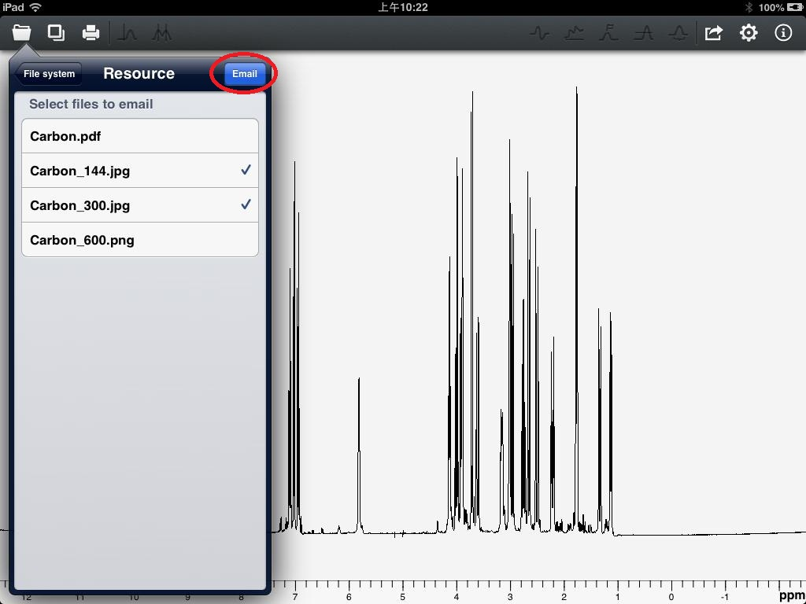
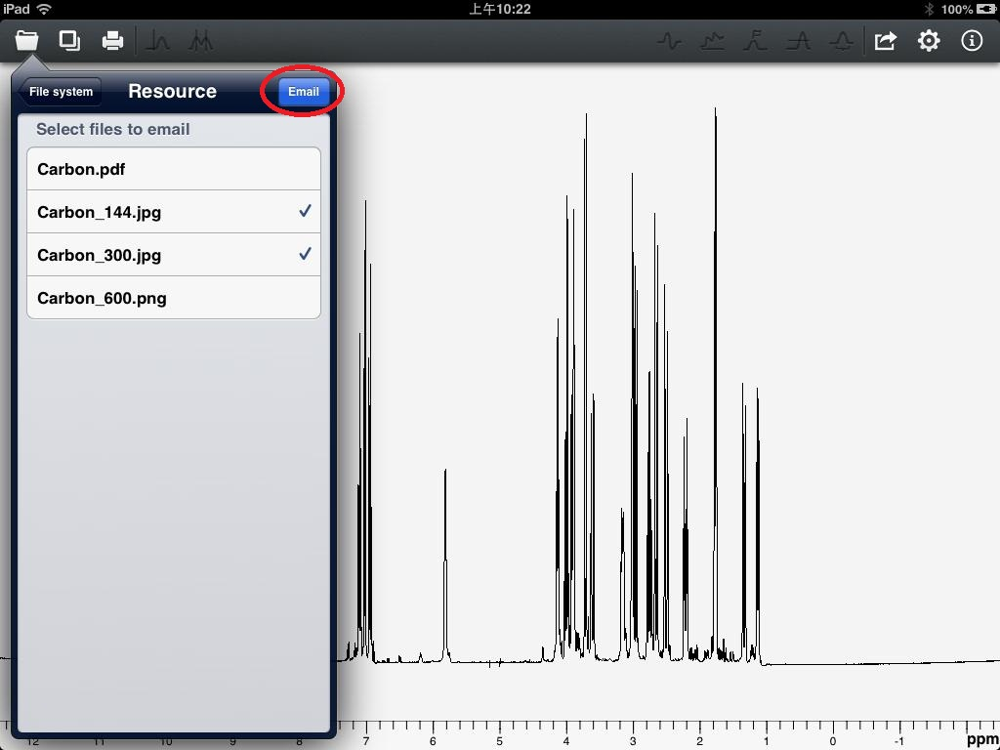

User Guide of Touch NMR
The processed spectrum can be save as "pdf", "jpg" and "png" three formats. The generated files are stored in a file system folder named "Resource". After entering the "Resource" folder, users will see the spectrums which were stored previously. There are two ways to export the resource files. The first is by Email, users can click the certain file which will be sent as attachment. Then click "Email" button to send Email, as shown in Figure 6. The second is exporting through WIFI.

Figure 6

Figure 6